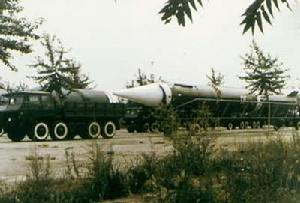
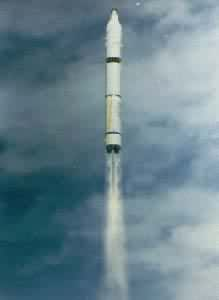

空间科学
中国在二十世纪六十年代初期开始利用探空火箭、探空气球开展了高层大气探测。在七十年代初期开始利用“实践”系列科学探测与技术试验卫星开展了一系列空间探测和研究，获得 了很多宝贵的环境探测资料。近年来，开展了空间天气预报的研究工作及相应的国际合作。从八十年代末开始利用返回型遥感卫星进行了多种空间科学实验，在晶体和蛋白质生长、细胞培养、作物育种等方面取得了很好的成果。中国空间科学在基础理论研究方面取得了若干创新成果，在空间物理学、微重力科学和空间生命科学等领域建立了具有一定水平的对外开放的国家级实验室，建立了空间有效载荷应用中心，具有支持进行空间科学实验的基本能力。近年来，利用“实践”系列科学探测与技术试验卫星对近地空间环境中的带电粒子及其效应进行了较为详细的探测，并首次完成了微重力流体物理两层流体空间实验，实现了空间实验的遥操作。